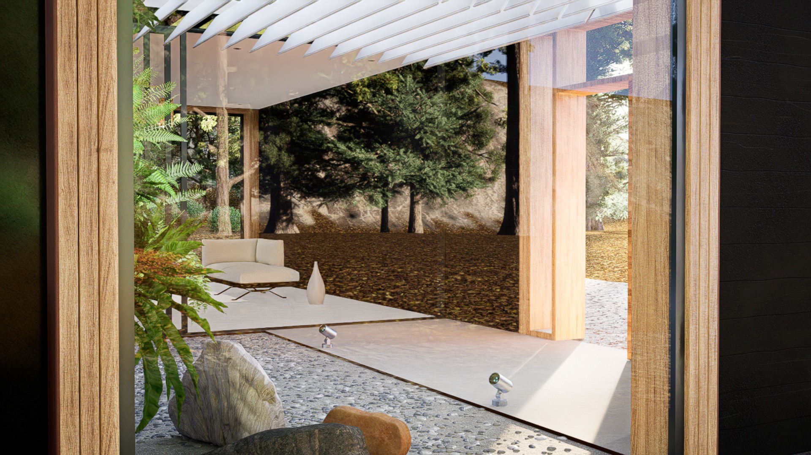
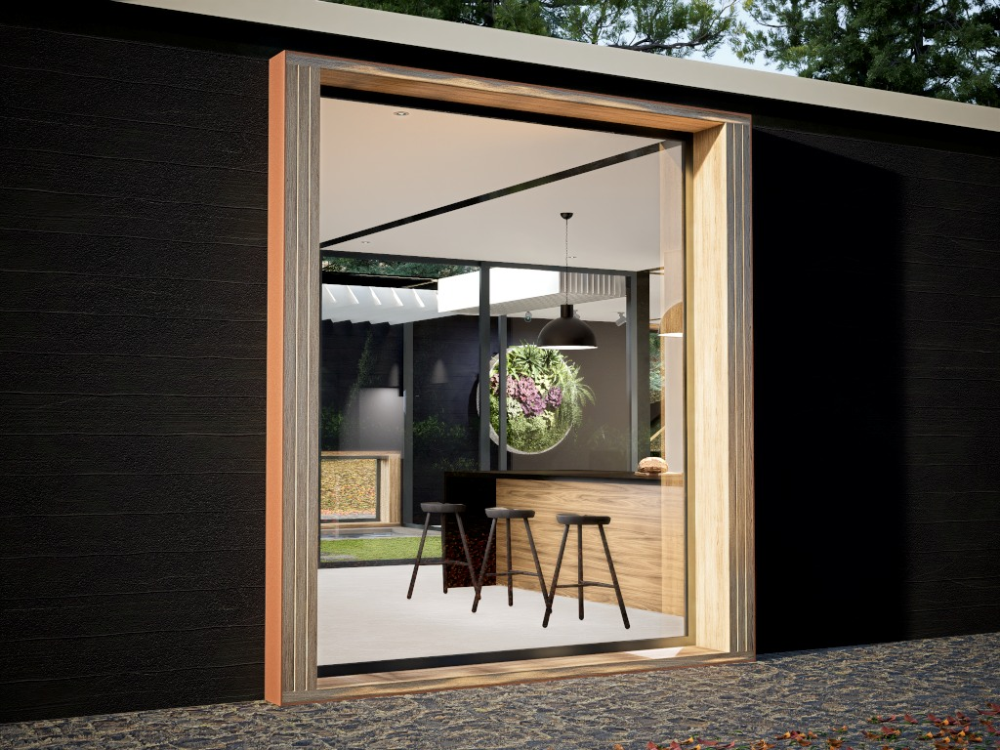
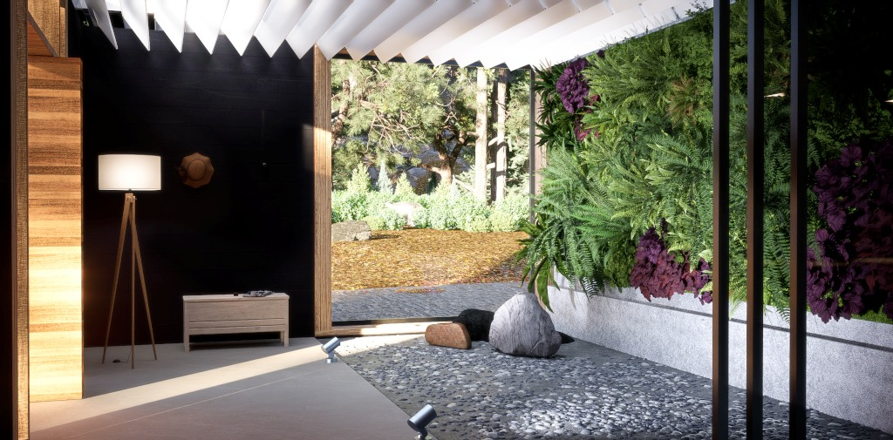
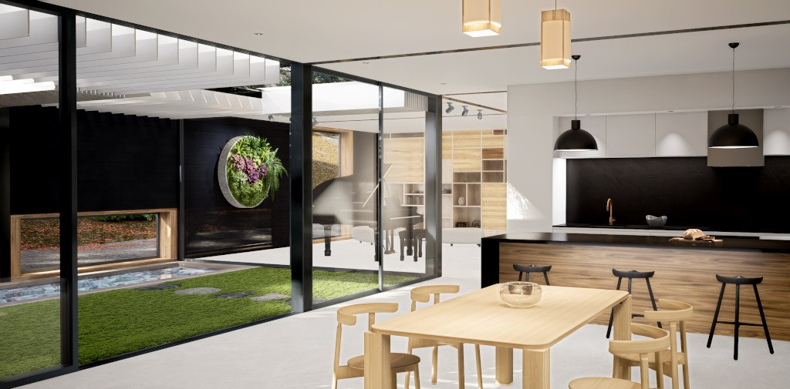
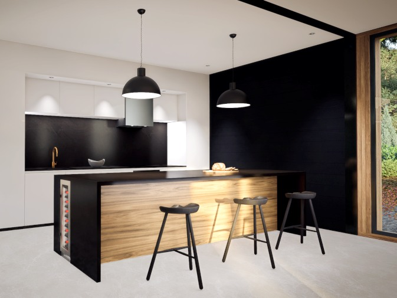
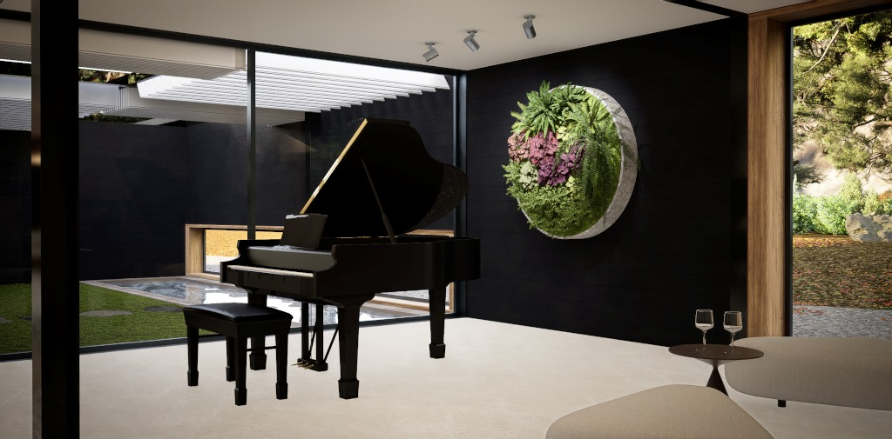

CASA DOMINÓ
A study in spatial continuity through light, material and threshold.
2026 · Nowhere

THE FRAMING
Visualizing a house through spatial continuity
Casa Dominó is conceived as a visualization experiment rather than a traditional architectural showcase. The study turns attention toward what is not immediately seen. It questions how light, material, nature, and thresholds dissolve boundaries to create an unbroken flow between private sanctuaries, transitional paths, and the outside world.

THRESHOLD
A dark shell, a warmer interior.
Contrast becomes a visual device. Dark cladding contains the volume while timber and interior light begin to reveal a more tactile, inhabited space beyond the façade.
The shift
From enclosure to openness
Moving from enclosure to openness, the entrance is experienced as a sequence rather than a single moment. Transparency, filtered daylight, and soft thresholds of vegetation gently dissolve the boundary, drawing the outside world effortlessly into the interior.

The spatial reading
Rooms are read through one another
A cinematic overlap unfolds as the eye is drawn through layers of timber and transparency. Spatial echoes connect the composition: an off-center pool, a low horizontal window framing the landscape at water level, and a vivid circular green wall emerging against a dark timber shell.


EVERYDAY SCALE
The honed black sintered stone anchors the kitchen, echoed by the dark timber wall behind it. White cabinetry and lighter wood soften this weight, creating a layered balance of contrast, warmth and durability while allowing light to define hierarchy across the space.
INTIMACY
A quieter register
A darker scene interrupts the brighter sequence, introducing a more intimate rhythm through shadow, water and glass. As reflection and transparency blur spatial boundaries, the piano suggests something beyond the image itself: the sound, concentration and solitude of a creator’s space.
